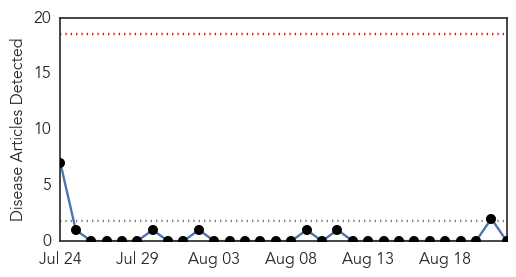
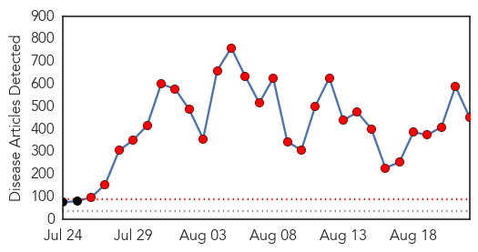
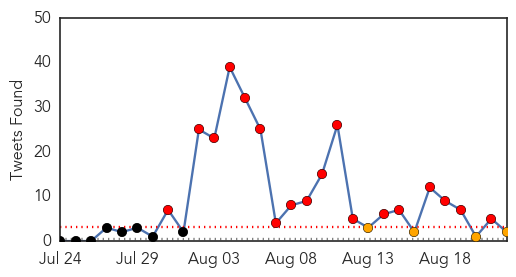
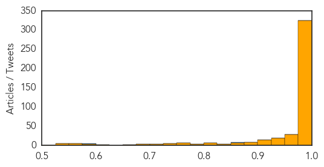

Bubonic Plague
30-Day Web Trend
0 alerts, 0 warnings

30-Day Twitter Trend
0 alerts, 0 warnings

Article Locations

Article Confidences

Top Articles:
-
No articles found for Aug 22, 2014
Top Tweets:
-
No tweets found for Aug 22, 2014
Ebola
30-Day Web Trend
28 alerts, 0 warnings

30-Day Twitter Trend
26 alerts, 0 warnings

Article Locations
Article Confidences
Top Articles:
- 1.000
- 5 Viruses Far Deadlier Than Ebola
- 1.000
- Nigeria confirms two more Ebola cases
- 1.000
- Ebola virus: Welsh woman out of voluntary isolation following 21-day monitoring period
- 1.000
- WHO warns of "shadow zones", hidden cases in Ebola outbreak
- 1.000
- Strengthening surveillance key to keeping Ebola from Indonesia
- 1.000
- Breathe easy, Sacramento. Patient doesn't have Ebola
- 1.000
- West Africa Ebola deaths reach 1427, World Health Organisation says
- 1.000
- Vietnam monitors 83 passengers against Ebola, reporting no infections
- 1.000
- Ebola outbreak: World Health Organisation drafts strategy to combat disease as death toll rises to 1,427
- 1.000
- South Africa Bans Travelers From Ebola-stricken Countries
- 1.000
- Contagious Kisses? We Answer Your Questions About Ebola Recovery
- 1.000
- Checking The Spread Of Ebola Virus
- 1.000
- WHO Warns of 'Shadow Zones', Hidden Cases in Ebola Outbreak
- 1.000
- Feverish traveller in Myanmar has malaria not Ebola
- 1.000
- Last Ebola-free region of Liberia falls to virus
- 1.000
- WHO: Ebola outbreak in Africa likely underestimated
- 1.000
- Cooperation key to curbing Ebola
- 1.000
- Ebola In Sacramento? New Mexico? Know The Symptoms
- 1.000
- Ebola outbreak: Number of deaths are massively underestimated, warns WHO
- 1.000
- Ebola crisis: Irish officials confirm Dessie Quinn did not have Ebola
- 1.000
- Sierra Leone's Ebola deaths traced back to healer
- 1.000
- Last Ebola-free region in Liberia falls to the virus
- 1.000
- Liberia’s last Ebola-free region falls to virus
- 1.000
- S Africa bans travellers from Ebola-hit nations
- 1.000
- WHO: Ebola outbreak in Africa likely underestimated
- 1.000
- Egypt is Ebola free, but not far from the outbreak
- 1.000
- Ebola death toll crosses 1,400
- 1.000
- California patient at risk for Ebola tests negative
- 1.000
- Ebola virus spread into Sierra Leone due to one healer
- 1.000
- Ebola outbreak: Six reasons why it's out of control
- 1.000
- WHO warns of hidden Ebola 'shadow zones'
- 1.000
- Borders closing over Ebola fears
- 1.000
- California patient tests negative for Ebola virus
- 1.000
- As Ebola outbreak grows, WHO notes case-count difficulties
- 1.000
- California patient tests negative for Ebola virus
- 1.000
- Ebola: Company that employed suspected Donegal virus victim Dessie Quinn 'return all staff from Sierra Leone'
- 1.000
- UN physician in West Africa to shore up response
- 1.000
- Ebola crisis: Speed and extent of outbreak 'unprecedented'
- 1.000
- DFA: Pinoy in Togo has Ebola-like symptoms
- 1.000
- Borders closing over Ebola fears
- 1.000
- No ebola risk in Cape Town
- 1.000
- FDA seeks to dispel Ebola outbreak fears
- 1.000
- Health officials: Patient tested negative for the Ebola virus
- 1.000
- No Ebola Virus Found In Patient At Sacramento Hospital « CBS San Francisco
- 1.000
- Interview with Dr. Carmen Valle- ‘Our work with Ebola has a very important psychosocial support component’ - Sierra Leone
- 1.000
- A Tale of Two Africas
- 1.000
- Nigeria confirms 2 new Ebola cases - National
- 1.000
- No official report yet on Filipino suspected of Ebola in Togo
- 1.000
- Senegal closes its borders with Guinea over Ebola fears
- 1.000
- Actions Taken To Prevent Ebola Outbreak In West Africa From Reaching Kenya And Suspension Of Kenya Airways Flights ·ETB Travel News Australia
Showing top 50 articles...
Top Tweets:
- 0.962
- RT: Can the CDC's disease detectives crack the code on the Ebola outbreak in Africa? @DrFriedenCDC says yes. AspenIdeas htt…
- 0.865
- RT: HSE has confirmed lab test samples for individual recently returned from Africa has proved negative for Ebola Virus http:…
- 0.833
- RT: Increased testing for Ebola virus disease to be expected http://t.co/6XrnhpkmRK EVD
- 0.735
- End Ebola Now PSA for the West African region - please watch and share https://t.co/oIrxlvu2Du endebolanow
- 0.681
- Updates on Ebola, a vaccine against CHIKV, and infection control guidelines for MERS. HealthSecurity http://t.co/H1JhGDbj22
- 0.571
- RT: Nigeria Records Fresh Ebola Cases!: The Minister of Health, Professor Onyebuchi Chukwu has anno... http://t.co/2OA2KFNdVf Eb…